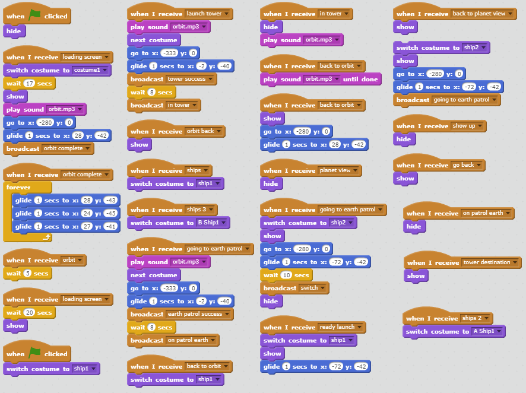

The galaxy is being threatened by enemies of the darkness. You are a guardian, born to protect space and spread light across the universe. The scoring system will accumalate your score based on how many enemies you kill. Random enemies will appear and the difficulty will increase as more enemies spawn in different planets. Because your ghost will resurrect you, it is very difficult for a guardian to die.
Before high school, I played a game called "Destiny". I enjoyed it as I was able to play with 5 other people in different activities. Because I enjoyed so much of the game, I decided to try and replicate it on Scratch, which was not easy. Some successful points include the loading the screen and animations while also utilizing a randomizer for the enemies. Obstacles included the change of sound when travelling to different locations. We weren't able to fix the issue, but we have found a temporary solution which is to play a different sound after the previous sound has ended. Another obstacle was the 300+ costumes of the loading screen that did not fit. In order to make the loading screen look professional, I matched the colors of the backdrop with the loading screen itself. If I had more time, I would add more locations, more enemies, and improve the animations of the game.
You are a famous scientist who recently made headlines for developing a cure for cancer and many other diseases. However, the cure was deemed deadly and would kill all known living cells on Earth. You have once chance to save it.
We first started by creating a google drawing that included a flow chart of all of our scenes. We had many issues, such as deciding on how the story will end or what type of mood the story will be. However, by simplfying the plot and making a understandable ending, we resolve our conflict on how our story will play out. Our program was created by using similar functions that would call on the next scene to play, which would develop an entire story. This is an example of procedural abstraction because it would allow the story to continuously play. A delay in the typing speed would mean for example a new day has started. I particularly enjoyed stories like Dr. Suess for it was simple which helped me change our story to make it simpler. Another story I liked was Geronimo Stilton since the plot was very interesting and was the first book that I actually enjoyed.